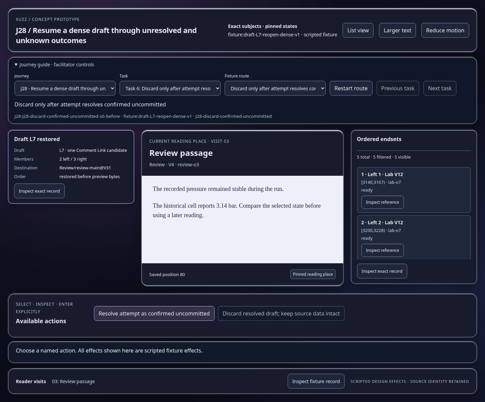
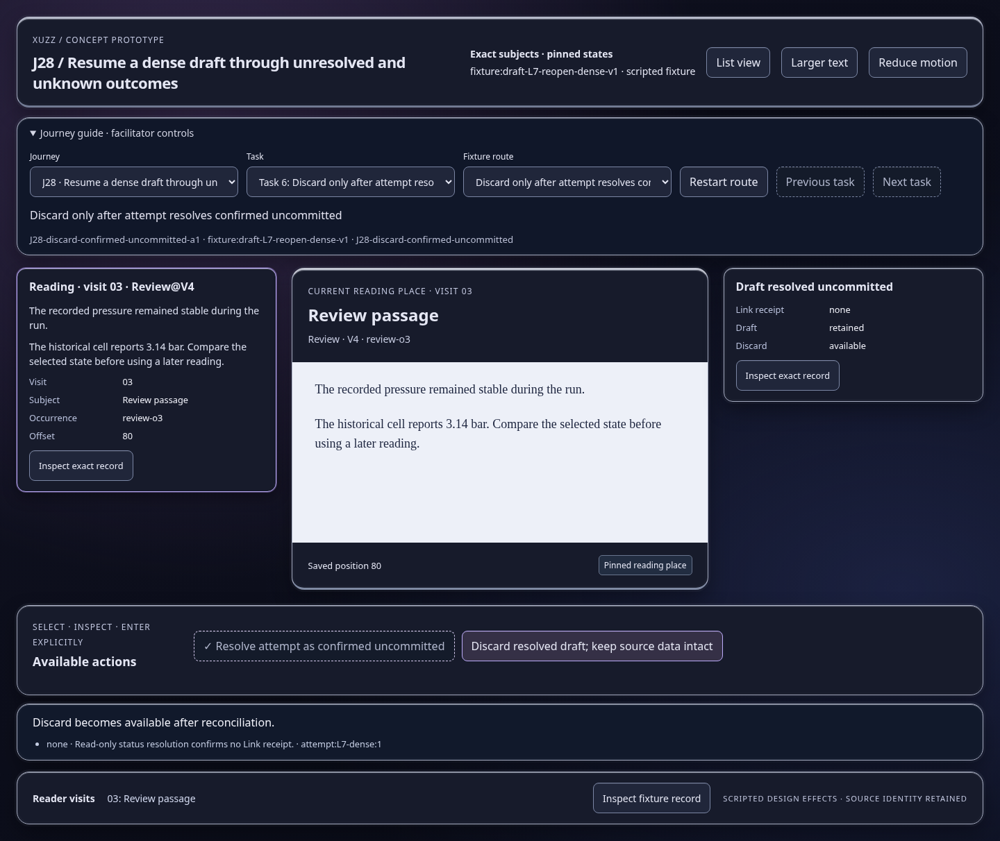
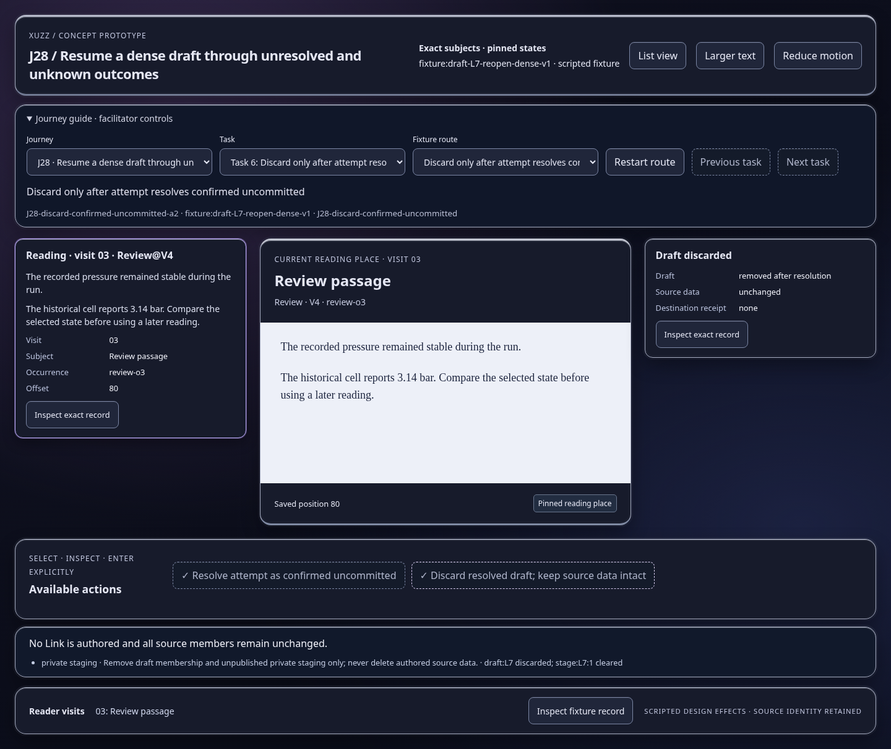

Scripted concept states; inspect the effect and identity trace. Images show actual prototype rendering.

Discard becomes available after reconciliation.
Open this represented state
No Link is authored and all source members remain unchanged.
Open this represented state